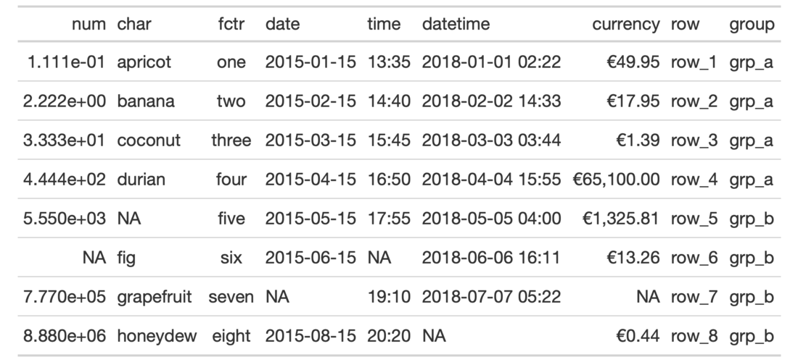
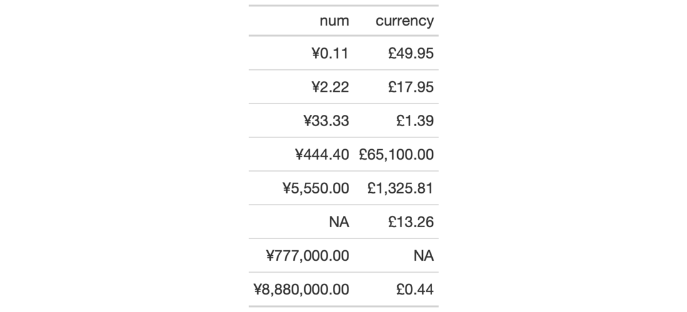

| fmt_currency {gt} | R Documentation |
With numeric values in a gt table, we can perform currency-based
formatting. This function supports both automatic formatting with a
three-letter or numeric currency code. We can also specify a custom currency
that is formatted according to the output context with the currency()
helper function. Numeric formatting facilitated through the use of a locale
ID. We have fine control over the conversion from numeric values to currency
values, where we could take advantage of the following options:
the currency: providing a currency code or common currency name will
procure the correct currency symbol and number of currency subunits; we could
also use the currency() helper function to specify a custom currency
currency symbol placement: the currency symbol can be placed before or after the values
decimals/subunits: choice of the number of decimal places, and a choice of the decimal symbol, and an option on whether to include or exclude the currency subunits (decimal portion)
negative values: choice of a negative sign or parentheses for values less than zero
digit grouping separators: options to enable/disable digit separators and provide a choice of separator symbol
scaling: we can choose to scale targeted values by a multiplier value
large-number suffixing: larger figures (thousands, millions, etc.) can be autoscaled and decorated with the appropriate suffixes
pattern: option to use a text pattern for decoration of the formatted currency values
locale-based formatting: providing a locale ID will result in currency formatting specific to the chosen locale
We can use the info_currencies() function for a useful reference on all of
the possible inputs to the currency argument.
fmt_currency(
data,
columns,
rows = everything(),
currency = "USD",
use_subunits = TRUE,
accounting = FALSE,
decimals = NULL,
drop_trailing_dec_mark = TRUE,
use_seps = TRUE,
scale_by = 1,
suffixing = FALSE,
pattern = "{x}",
sep_mark = ",",
dec_mark = ".",
placement = "left",
incl_space = FALSE,
locale = NULL
)
data |
A table object that is created using the |
columns |
The columns to format. Can either be a series of column names
provided in |
rows |
Optional rows to format. Providing either |
currency |
The currency to use for the numeric value. This input can be
supplied as a 3-letter currency code (e.g., We can also use the If nothing is provided to |
use_subunits |
An option for whether the subunits portion of a currency
value should be displayed. By default, this is |
accounting |
An option to use accounting style for currency values. With
|
decimals |
An option to specify the exact number of decimal places to
use. The default number of decimal places is |
drop_trailing_dec_mark |
A logical value that determines whether decimal
marks should always appear even if there are no decimal digits to display
after formatting (e.g, |
use_seps |
An option to use digit group separators. The type of digit
group separator is set by |
scale_by |
A value to scale the input. The default is |
suffixing |
An option to scale and apply suffixes to larger numbers
(e.g., Including Any use of |
pattern |
A formatting pattern that allows for decoration of the
formatted value. The value itself is represented by |
sep_mark |
The mark to use as a separator between groups of digits
(e.g., using |
dec_mark |
The character to use as a decimal mark (e.g., using |
placement |
The placement of the currency symbol. This can be either be
|
incl_space |
An option for whether to include a space between the value and the currency symbol. The default is to not introduce a space character. |
locale |
An optional locale ID that can be used for formatting the value
according the locale's rules. Examples include |
Targeting of values is done through columns and additionally by rows (if
nothing is provided for rows then entire columns are selected). A number of
helper functions exist to make targeting more effective. Conditional
formatting is possible by providing a conditional expression to the rows
argument. See the Arguments section for more information on this.
An object of class gt_tbl.


3-4
Other Format Data:
data_color(),
fmt_datetime(),
fmt_date(),
fmt_markdown(),
fmt_missing(),
fmt_number(),
fmt_passthrough(),
fmt_percent(),
fmt_scientific(),
fmt_time(),
fmt(),
text_transform()
# Use `exibble` to create a gt table;
# format the `currency` column to have
# currency values in euros (EUR)
tab_1 <-
exibble %>%
gt() %>%
fmt_currency(
columns = currency,
currency = "EUR"
)
# Use `exibble` to create a gt table;
# Keep only the `num` and `currency`,
# columns, then, format those columns
# using the "CNY" and "GBP" currencies
tab_2 <-
exibble %>%
dplyr::select(num, currency) %>%
gt() %>%
fmt_currency(
columns = num,
currency = "CNY"
) %>%
fmt_currency(
columns = currency,
currency = "GBP"
)